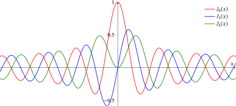

Класична електродинаміка. Збірник задач
\(\newcommand{\footnotename}{footnote}\)
\(\def \LWRfootnote {1}\)
\(\newcommand {\footnote }[2][\LWRfootnote ]{{}^{\mathrm {#1}}}\)
\(\newcommand {\footnotemark }[1][\LWRfootnote ]{{}^{\mathrm {#1}}}\)
\(\let \LWRorighspace \hspace \)
\(\renewcommand {\hspace }{\ifstar \LWRorighspace \LWRorighspace }\)
\(\newcommand {\TextOrMath }[2]{#2}\)
\(\newcommand {\mathnormal }[1]{{#1}}\)
\(\newcommand \ensuremath [1]{#1}\)
\(\newcommand {\LWRframebox }[2][]{\fbox {#2}} \newcommand {\framebox }[1][]{\LWRframebox } \)
\(\newcommand {\setlength }[2]{}\)
\(\newcommand {\addtolength }[2]{}\)
\(\newcommand {\setcounter }[2]{}\)
\(\newcommand {\addtocounter }[2]{}\)
\(\newcommand {\arabic }[1]{}\)
\(\newcommand {\number }[1]{}\)
\(\newcommand {\noalign }[1]{\text {#1}\notag \\}\)
\(\newcommand {\cline }[1]{}\)
\(\newcommand {\directlua }[1]{\text {(directlua)}}\)
\(\newcommand {\luatexdirectlua }[1]{\text {(directlua)}}\)
\(\newcommand {\protect }{}\)
\(\def \LWRabsorbnumber #1 {}\)
\(\def \LWRabsorbquotenumber "#1 {}\)
\(\newcommand {\LWRabsorboption }[1][]{}\)
\(\newcommand {\LWRabsorbtwooptions }[1][]{\LWRabsorboption }\)
\(\def \mathchar {\ifnextchar "\LWRabsorbquotenumber \LWRabsorbnumber }\)
\(\def \mathcode #1={\mathchar }\)
\(\let \delcode \mathcode \)
\(\let \delimiter \mathchar \)
\(\def \oe {\unicode {x0153}}\)
\(\def \OE {\unicode {x0152}}\)
\(\def \ae {\unicode {x00E6}}\)
\(\def \AE {\unicode {x00C6}}\)
\(\def \aa {\unicode {x00E5}}\)
\(\def \AA {\unicode {x00C5}}\)
\(\def \o {\unicode {x00F8}}\)
\(\def \O {\unicode {x00D8}}\)
\(\def \l {\unicode {x0142}}\)
\(\def \L {\unicode {x0141}}\)
\(\def \ss {\unicode {x00DF}}\)
\(\def \SS {\unicode {x1E9E}}\)
\(\def \dag {\unicode {x2020}}\)
\(\def \ddag {\unicode {x2021}}\)
\(\def \P {\unicode {x00B6}}\)
\(\def \copyright {\unicode {x00A9}}\)
\(\def \pounds {\unicode {x00A3}}\)
\(\let \LWRref \ref \)
\(\renewcommand {\ref }{\ifstar \LWRref \LWRref }\)
\( \newcommand {\multicolumn }[3]{#3}\)
\(\require {textcomp}\)
\(\require {colortbl}\)
\(\let \LWRorigcolumncolor \columncolor \)
\(\renewcommand {\columncolor }[2][named]{\LWRorigcolumncolor [#1]{#2}\LWRabsorbtwooptions }\)
\(\let \LWRorigrowcolor \rowcolor \)
\(\renewcommand {\rowcolor }[2][named]{\LWRorigrowcolor [#1]{#2}\LWRabsorbtwooptions }\)
\(\let \LWRorigcellcolor \cellcolor \)
\(\renewcommand {\cellcolor }[2][named]{\LWRorigcellcolor [#1]{#2}\LWRabsorbtwooptions }\)
\(\newcommand {\intertext }[1]{\text {#1}\notag \\}\)
\(\let \Hat \hat \)
\(\let \Check \check \)
\(\let \Tilde \tilde \)
\(\let \Acute \acute \)
\(\let \Grave \grave \)
\(\let \Dot \dot \)
\(\let \Ddot \ddot \)
\(\let \Breve \breve \)
\(\let \Bar \bar \)
\(\let \Vec \vec \)
\(\let \symnormal \mathit \)
\(\let \symliteral \mathrm \)
\(\let \symbb \mathbb \)
\(\let \symbbit \mathbb \)
\(\let \symcal \mathcal \)
\(\let \symscr \mathscr \)
\(\let \symfrak \mathfrak \)
\(\let \symsfup \mathsf \)
\(\let \symsfit \mathit \)
\(\let \symbfsf \mathbf \)
\(\let \symbfup \mathbf \)
\(\newcommand {\symbfit }[1]{\boldsymbol {#1}}\)
\(\let \symbfcal \mathcal \)
\(\let \symbfscr \mathscr \)
\(\let \symbffrak \mathfrak \)
\(\let \symbfsfup \mathbf \)
\(\newcommand {\symbfsfit }[1]{\boldsymbol {#1}}\)
\(\let \symup \mathrm \)
\(\let \symbf \mathbf \)
\(\let \symit \mathit \)
\(\let \symtt \mathtt \)
\(\let \symbffrac \mathbffrac \)
\(\newcommand {\mathfence }[1]{\mathord {#1}}\)
\(\newcommand {\mathover }[1]{#1}\)
\(\newcommand {\mathunder }[1]{#1}\)
\(\newcommand {\mathaccent }[1]{#1}\)
\(\newcommand {\mathbotaccent }[1]{#1}\)
\(\newcommand {\mathalpha }[1]{\mathord {#1}}\)
\(\def\upAlpha{\unicode{x0391}}\)
\(\def\upBeta{\unicode{x0392}}\)
\(\def\upGamma{\unicode{x0393}}\)
\(\def\upDigamma{\unicode{x03DC}}\)
\(\def\upDelta{\unicode{x0394}}\)
\(\def\upEpsilon{\unicode{x0395}}\)
\(\def\upZeta{\unicode{x0396}}\)
\(\def\upEta{\unicode{x0397}}\)
\(\def\upTheta{\unicode{x0398}}\)
\(\def\upVartheta{\unicode{x03F4}}\)
\(\def\upIota{\unicode{x0399}}\)
\(\def\upKappa{\unicode{x039A}}\)
\(\def\upLambda{\unicode{x039B}}\)
\(\def\upMu{\unicode{x039C}}\)
\(\def\upNu{\unicode{x039D}}\)
\(\def\upXi{\unicode{x039E}}\)
\(\def\upOmicron{\unicode{x039F}}\)
\(\def\upPi{\unicode{x03A0}}\)
\(\def\upVarpi{\unicode{x03D6}}\)
\(\def\upRho{\unicode{x03A1}}\)
\(\def\upSigma{\unicode{x03A3}}\)
\(\def\upTau{\unicode{x03A4}}\)
\(\def\upUpsilon{\unicode{x03A5}}\)
\(\def\upPhi{\unicode{x03A6}}\)
\(\def\upChi{\unicode{x03A7}}\)
\(\def\upPsi{\unicode{x03A8}}\)
\(\def\upOmega{\unicode{x03A9}}\)
\(\def\itAlpha{\unicode{x1D6E2}}\)
\(\def\itBeta{\unicode{x1D6E3}}\)
\(\def\itGamma{\unicode{x1D6E4}}\)
\(\def\itDigamma{\mathit{\unicode{x03DC}}}\)
\(\def\itDelta{\unicode{x1D6E5}}\)
\(\def\itEpsilon{\unicode{x1D6E6}}\)
\(\def\itZeta{\unicode{x1D6E7}}\)
\(\def\itEta{\unicode{x1D6E8}}\)
\(\def\itTheta{\unicode{x1D6E9}}\)
\(\def\itVartheta{\unicode{x1D6F3}}\)
\(\def\itIota{\unicode{x1D6EA}}\)
\(\def\itKappa{\unicode{x1D6EB}}\)
\(\def\itLambda{\unicode{x1D6EC}}\)
\(\def\itMu{\unicode{x1D6ED}}\)
\(\def\itNu{\unicode{x1D6EE}}\)
\(\def\itXi{\unicode{x1D6EF}}\)
\(\def\itOmicron{\unicode{x1D6F0}}\)
\(\def\itPi{\unicode{x1D6F1}}\)
\(\def\itRho{\unicode{x1D6F2}}\)
\(\def\itSigma{\unicode{x1D6F4}}\)
\(\def\itTau{\unicode{x1D6F5}}\)
\(\def\itUpsilon{\unicode{x1D6F6}}\)
\(\def\itPhi{\unicode{x1D6F7}}\)
\(\def\itChi{\unicode{x1D6F8}}\)
\(\def\itPsi{\unicode{x1D6F9}}\)
\(\def\itOmega{\unicode{x1D6FA}}\)
\(\def\upalpha{\unicode{x03B1}}\)
\(\def\upbeta{\unicode{x03B2}}\)
\(\def\upvarbeta{\unicode{x03D0}}\)
\(\def\upgamma{\unicode{x03B3}}\)
\(\def\updigamma{\unicode{x03DD}}\)
\(\def\updelta{\unicode{x03B4}}\)
\(\def\upepsilon{\unicode{x03F5}}\)
\(\def\upvarepsilon{\unicode{x03B5}}\)
\(\def\upzeta{\unicode{x03B6}}\)
\(\def\upeta{\unicode{x03B7}}\)
\(\def\uptheta{\unicode{x03B8}}\)
\(\def\upvartheta{\unicode{x03D1}}\)
\(\def\upiota{\unicode{x03B9}}\)
\(\def\upkappa{\unicode{x03BA}}\)
\(\def\upvarkappa{\unicode{x03F0}}\)
\(\def\uplambda{\unicode{x03BB}}\)
\(\def\upmu{\unicode{x03BC}}\)
\(\def\upnu{\unicode{x03BD}}\)
\(\def\upxi{\unicode{x03BE}}\)
\(\def\upomicron{\unicode{x03BF}}\)
\(\def\uppi{\unicode{x03C0}}\)
\(\def\upvarpi{\unicode{x03D6}}\)
\(\def\uprho{\unicode{x03C1}}\)
\(\def\upvarrho{\unicode{x03F1}}\)
\(\def\upsigma{\unicode{x03C3}}\)
\(\def\upvarsigma{\unicode{x03C2}}\)
\(\def\uptau{\unicode{x03C4}}\)
\(\def\upupsilon{\unicode{x03C5}}\)
\(\def\upphi{\unicode{x03D5}}\)
\(\def\upvarphi{\unicode{x03C6}}\)
\(\def\upchi{\unicode{x03C7}}\)
\(\def\uppsi{\unicode{x03C8}}\)
\(\def\upomega{\unicode{x03C9}}\)
\(\def\italpha{\unicode{x1D6FC}}\)
\(\def\itbeta{\unicode{x1D6FD}}\)
\(\def\itvarbeta{\unicode{x03D0}}\)
\(\def\itgamma{\unicode{x1D6FE}}\)
\(\def\itdigamma{\mathit{\unicode{x03DD}}}\)
\(\def\itdelta{\unicode{x1D6FF}}\)
\(\def\itepsilon{\unicode{x1D716}}\)
\(\def\itvarepsilon{\unicode{x1D700}}\)
\(\def\itzeta{\unicode{x1D701}}\)
\(\def\iteta{\unicode{x1D702}}\)
\(\def\ittheta{\unicode{x1D703}}\)
\(\def\itvartheta{\unicode{x1D717}}\)
\(\def\itiota{\unicode{x1D704}}\)
\(\def\itkappa{\unicode{x1D705}}\)
\(\def\itvarkappa{\unicode{x1D718}}\)
\(\def\itlambda{\unicode{x1D706}}\)
\(\def\itmu{\unicode{x1D707}}\)
\(\def\itnu{\unicode{x1D708}}\)
\(\def\itxi{\unicode{x1D709}}\)
\(\def\itomicron{\unicode{x1D70A}}\)
\(\def\itpi{\unicode{x1D70B}}\)
\(\def\itvarpi{\unicode{x1D71B}}\)
\(\def\itrho{\unicode{x1D70C}}\)
\(\def\itvarrho{\unicode{x1D71A}}\)
\(\def\itsigma{\unicode{x1D70E}}\)
\(\def\itvarsigma{\unicode{x1D70D}}\)
\(\def\ittau{\unicode{x1D70F}}\)
\(\def\itupsilon{\unicode{x1D710}}\)
\(\def\itphi{\unicode{x1D719}}\)
\(\def\itvarphi{\unicode{x1D711}}\)
\(\def\itchi{\unicode{x1D712}}\)
\(\def\itpsi{\unicode{x1D713}}\)
\(\def\itomega{\unicode{x1D714}}\)
\(\let \lparen (\)
\(\let \rparen )\)
\(\newcommand {\cuberoot }[1]{\,{}^3\!\!\sqrt {#1}}\,\)
\(\newcommand {\fourthroot }[1]{\,{}^4\!\!\sqrt {#1}}\,\)
\(\newcommand {\longdivision }[1]{\mathord {\unicode {x027CC}#1}}\)
\(\newcommand {\mathcomma }{,}\)
\(\newcommand {\mathcolon }{:}\)
\(\newcommand {\mathsemicolon }{;}\)
\(\newcommand {\overbracket }[1]{\mathinner {\overline {\ulcorner {#1}\urcorner }}}\)
\(\newcommand {\underbracket }[1]{\mathinner {\underline {\llcorner {#1}\lrcorner }}}\)
\(\newcommand {\overbar }[1]{\mathord {#1\unicode {x00305}}}\)
\(\newcommand {\ovhook }[1]{\mathord {#1\unicode {x00309}}}\)
\(\newcommand {\ocirc }[1]{\mathord {#1\unicode {x0030A}}}\)
\(\newcommand {\candra }[1]{\mathord {#1\unicode {x00310}}}\)
\(\newcommand {\oturnedcomma }[1]{\mathord {#1\unicode {x00312}}}\)
\(\newcommand {\ocommatopright }[1]{\mathord {#1\unicode {x00315}}}\)
\(\newcommand {\droang }[1]{\mathord {#1\unicode {x0031A}}}\)
\(\newcommand {\leftharpoonaccent }[1]{\mathord {#1\unicode {x020D0}}}\)
\(\newcommand {\rightharpoonaccent }[1]{\mathord {#1\unicode {x020D1}}}\)
\(\newcommand {\vertoverlay }[1]{\mathord {#1\unicode {x020D2}}}\)
\(\newcommand {\leftarrowaccent }[1]{\mathord {#1\unicode {x020D0}}}\)
\(\newcommand {\annuity }[1]{\mathord {#1\unicode {x020E7}}}\)
\(\newcommand {\widebridgeabove }[1]{\mathord {#1\unicode {x020E9}}}\)
\(\newcommand {\asteraccent }[1]{\mathord {#1\unicode {x020F0}}}\)
\(\newcommand {\threeunderdot }[1]{\mathord {#1\unicode {x020E8}}}\)
\(\newcommand {\Bbbsum }{\mathop {\unicode {x2140}}\limits }\)
\(\newcommand {\oiint }{\mathop {\unicode {x222F}}\limits }\)
\(\newcommand {\oiiint }{\mathop {\unicode {x2230}}\limits }\)
\(\newcommand {\intclockwise }{\mathop {\unicode {x2231}}\limits }\)
\(\newcommand {\ointclockwise }{\mathop {\unicode {x2232}}\limits }\)
\(\newcommand {\ointctrclockwise }{\mathop {\unicode {x2233}}\limits }\)
\(\newcommand {\varointclockwise }{\mathop {\unicode {x2232}}\limits }\)
\(\newcommand {\leftouterjoin }{\mathop {\unicode {x27D5}}\limits }\)
\(\newcommand {\rightouterjoin }{\mathop {\unicode {x27D6}}\limits }\)
\(\newcommand {\fullouterjoin }{\mathop {\unicode {x27D7}}\limits }\)
\(\newcommand {\bigbot }{\mathop {\unicode {x27D8}}\limits }\)
\(\newcommand {\bigtop }{\mathop {\unicode {x27D9}}\limits }\)
\(\newcommand {\xsol }{\mathop {\unicode {x29F8}}\limits }\)
\(\newcommand {\xbsol }{\mathop {\unicode {x29F9}}\limits }\)
\(\newcommand {\bigcupdot }{\mathop {\unicode {x2A03}}\limits }\)
\(\newcommand {\bigsqcap }{\mathop {\unicode {x2A05}}\limits }\)
\(\newcommand {\conjquant }{\mathop {\unicode {x2A07}}\limits }\)
\(\newcommand {\disjquant }{\mathop {\unicode {x2A08}}\limits }\)
\(\newcommand {\bigtimes }{\mathop {\unicode {x2A09}}\limits }\)
\(\newcommand {\modtwosum }{\mathop {\unicode {x2A0A}}\limits }\)
\(\newcommand {\sumint }{\mathop {\unicode {x2A0B}}\limits }\)
\(\newcommand {\intbar }{\mathop {\unicode {x2A0D}}\limits }\)
\(\newcommand {\intBar }{\mathop {\unicode {x2A0E}}\limits }\)
\(\newcommand {\fint }{\mathop {\unicode {x2A0F}}\limits }\)
\(\newcommand {\cirfnint }{\mathop {\unicode {x2A10}}\limits }\)
\(\newcommand {\awint }{\mathop {\unicode {x2A11}}\limits }\)
\(\newcommand {\rppolint }{\mathop {\unicode {x2A12}}\limits }\)
\(\newcommand {\scpolint }{\mathop {\unicode {x2A13}}\limits }\)
\(\newcommand {\npolint }{\mathop {\unicode {x2A14}}\limits }\)
\(\newcommand {\pointint }{\mathop {\unicode {x2A15}}\limits }\)
\(\newcommand {\sqint }{\mathop {\unicode {x2A16}}\limits }\)
\(\newcommand {\intlarhk }{\mathop {\unicode {x2A17}}\limits }\)
\(\newcommand {\intx }{\mathop {\unicode {x2A18}}\limits }\)
\(\newcommand {\intcap }{\mathop {\unicode {x2A19}}\limits }\)
\(\newcommand {\intcup }{\mathop {\unicode {x2A1A}}\limits }\)
\(\newcommand {\upint }{\mathop {\unicode {x2A1B}}\limits }\)
\(\newcommand {\lowint }{\mathop {\unicode {x2A1C}}\limits }\)
\(\newcommand {\bigtriangleleft }{\mathop {\unicode {x2A1E}}\limits }\)
\(\newcommand {\zcmp }{\mathop {\unicode {x2A1F}}\limits }\)
\(\newcommand {\zpipe }{\mathop {\unicode {x2A20}}\limits }\)
\(\newcommand {\zproject }{\mathop {\unicode {x2A21}}\limits }\)
\(\newcommand {\biginterleave }{\mathop {\unicode {x2AFC}}\limits }\)
\(\newcommand {\bigtalloblong }{\mathop {\unicode {x2AFF}}\limits }\)
\(\newcommand {\arabicmaj }{\mathop {\unicode {x1EEF0}}\limits }\)
\(\newcommand {\arabichad }{\mathop {\unicode {x1EEF1}}\limits }\)
\(\newcommand {\nicefrac }[3][]{\mathinner {{}^{#2}\!/\!_{#3}}}\)
\(\require {mhchem}\)
\(\newcommand {\toprule }[1][]{\hline }\)
\(\let \midrule \toprule \)
\(\let \bottomrule \toprule \)
\(\def \LWRbooktabscmidruleparen (#1)#2{}\)
\(\newcommand {\LWRbooktabscmidrulenoparen }[1]{}\)
\(\newcommand {\cmidrule }[1][]{\ifnextchar (\LWRbooktabscmidruleparen \LWRbooktabscmidrulenoparen }\)
\(\newcommand {\morecmidrules }{}\)
\(\newcommand {\specialrule }[3]{\hline }\)
\(\newcommand {\addlinespace }[1][]{}\)
\(\newcommand {\LWRsubmultirow }[2][]{#2}\)
\(\newcommand {\LWRmultirow }[2][]{\LWRsubmultirow }\)
\(\newcommand {\multirow }[2][]{\LWRmultirow }\)
\(\newcommand {\mrowcell }{}\)
\(\newcommand {\mcolrowcell }{}\)
\(\newcommand {\STneed }[1]{}\)
\(\newcommand {\vect }[1]{\boldsymbol {#1}}\)
\(\newcommand {\EMF }{\mathcal {E}}\)
\(\newcommand {\Efield }{\vect {E}}\)
\(\newcommand {\Dfield }{\vect {D}}\)
\(\newcommand {\Bfield }{\vect {B}}\)
\(\newcommand {\Hfield }{\vect {H}}\)
\(\newcommand {\rot }{\mathbf {\nabla }\times }\)
\(\newcommand {\divg }{\mathbf {\nabla }\cdot }\)
\(\DeclareMathOperator {\const }{const}\)
\(\DeclareMathOperator {\inv }{inv}\)
\(\newcommand {\Laplasian }{\Delta }\)
\(\DeclareMathOperator {\Div }{div}\)
\(\DeclareMathOperator {\Rot }{rot}\)
\(\DeclareMathOperator {\Grad }{grad}\)
\(\newcommand {\pot }{\mathit {ϕ}}\)
\(\renewcommand {\epsilon }{\varepsilon }\)
\(\renewcommand {\phi }{\varphi }\)
\(\newcommand {\nfrac }[2]{{}^{#1}\!/{}_{#2}}\)
\(\newcommand {\emf }{ℰ}\)
\(\newcommand {\tikzmarknode }[2]{#2}\)
\(\newcommand {\tikzmark }[1]{}\)
\(\newcommand {\enquote }[1]{«#1»}\)
\(\newcommand {\allowbreak }{}\)
\(\newcommand {\mitlambda }{\lambda }\)
\(\newcommand {\mitomega }{\omega }\)
\(\newcommand {\mittheta }{\theta }\)
\(\newcommand {\mitphi }{\varphi }\)
\(\newcommand {\tcbhighmath }[1]{\boxed {#1}}\)
\(\DeclareMathOperator {\sh }{sh}\)
\(\DeclareMathOperator {\ch }{ch}\)
\(\DeclareMathOperator {\tg }{tg}\)
\(\DeclareMathOperator {\ctg }{ctg}\)
\(\DeclareMathOperator {\arctg }{arctg}\)
\(\DeclareMathOperator {\arcctg }{arcctg}\)
\(\DeclareMathOperator {\cth }{cth}\)
\(\DeclareMathOperator {\cosec }{cosec}\)
\(\let \symsf \symsfup \)
\(\def\Alpha{\unicode{x0391}}\)
\(\def\Beta{\unicode{x0392}}\)
\(\def\Gamma{\unicode{x0393}}\)
\(\def\Digamma{\unicode{x03DC}}\)
\(\def\Delta{\unicode{x0394}}\)
\(\def\Epsilon{\unicode{x0395}}\)
\(\def\Zeta{\unicode{x0396}}\)
\(\def\Eta{\unicode{x0397}}\)
\(\def\Theta{\unicode{x0398}}\)
\(\def\Vartheta{\unicode{x03F4}}\)
\(\def\Iota{\unicode{x0399}}\)
\(\def\Kappa{\unicode{x039A}}\)
\(\def\Lambda{\unicode{x039B}}\)
\(\def\Mu{\unicode{x039C}}\)
\(\def\Nu{\unicode{x039D}}\)
\(\def\Xi{\unicode{x039E}}\)
\(\def\Omicron{\unicode{x039F}}\)
\(\def\Pi{\unicode{x03A0}}\)
\(\def\Varpi{\unicode{x03D6}}\)
\(\def\Rho{\unicode{x03A1}}\)
\(\def\Sigma{\unicode{x03A3}}\)
\(\def\Tau{\unicode{x03A4}}\)
\(\def\Upsilon{\unicode{x03A5}}\)
\(\def\Phi{\unicode{x03A6}}\)
\(\def\Chi{\unicode{x03A7}}\)
\(\def\Psi{\unicode{x03A8}}\)
\(\def\Omega{\unicode{x03A9}}\)
\(\def\alpha{\unicode{x1D6FC}}\)
\(\def\beta{\unicode{x1D6FD}}\)
\(\def\varbeta{\unicode{x03D0}}\)
\(\def\gamma{\unicode{x1D6FE}}\)
\(\def\digamma{\mathit{\unicode{x03DD}}}\)
\(\def\delta{\unicode{x1D6FF}}\)
\(\def\epsilon{\unicode{x1D716}}\)
\(\def\varepsilon{\unicode{x1D700}}\)
\(\def\zeta{\unicode{x1D701}}\)
\(\def\eta{\unicode{x1D702}}\)
\(\def\theta{\unicode{x1D703}}\)
\(\def\vartheta{\unicode{x1D717}}\)
\(\def\iota{\unicode{x1D704}}\)
\(\def\kappa{\unicode{x1D705}}\)
\(\def\varkappa{\unicode{x1D718}}\)
\(\def\lambda{\unicode{x1D706}}\)
\(\def\mu{\unicode{x1D707}}\)
\(\def\nu{\unicode{x1D708}}\)
\(\def\xi{\unicode{x1D709}}\)
\(\def\omicron{\unicode{x1D70A}}\)
\(\def\pi{\unicode{x1D70B}}\)
\(\def\varpi{\unicode{x1D71B}}\)
\(\def\rho{\unicode{x1D70C}}\)
\(\def\varrho{\unicode{x1D71A}}\)
\(\def\sigma{\unicode{x1D70E}}\)
\(\def\varsigma{\unicode{x1D70D}}\)
\(\def\tau{\unicode{x1D70F}}\)
\(\def\upsilon{\unicode{x1D710}}\)
\(\def\phi{\unicode{x1D719}}\)
\(\def\varphi{\unicode{x1D711}}\)
\(\def\chi{\unicode{x1D712}}\)
\(\def\psi{\unicode{x1D713}}\)
\(\def\omega{\unicode{x1D714}}\)
Додатки
А Основні формули векторного аналізуА.1 Тривимірний символ Леві-Чівіти
Тривимірний символ Леві-Чівіти визначений співвідношеннями
\(\seteqnumber{0}{}{0}\)
\begin{equation}
\label {eq:Levi-Chiv} \epsilon _{ijk} = - \epsilon _{jik} = - \epsilon _{ikj}.
\end{equation}
Деякі співвідношення з цим символом:
\(\seteqnumber{0}{}{1}\)
\begin{align}
\epsilon _{ijk}\epsilon _{kpq} &= \delta _{ip}\delta _{jq} - \delta _{iq}\delta _{jp}, \\ \epsilon _{iqk}\epsilon _{pqk} &= 2\delta _{ip}.
\end{align}
Ротор та векторний добуток у декартових координатах \(\{x,y,z\} = \{x_1, x_2, x_3\}\):
\(\seteqnumber{0}{}{3}\)
\begin{align}
\left [\rot \vect {A} \right ]_i &= \epsilon _{ijk}{\partial _j}{A_k}, \\ \left [ \vect {A} \times \vect {B} \right ]_i &= \epsilon _{ijk}{A_j}{B_k},
\end{align}
всі індекси пробігають значення \(1\), \(2\), \(3\).
А.2 Диференціальні операції в різних системах координатДекартова система координат
\(\seteqnumber{0}{}{5}\)
\begin{align}
\label {cartesian} \mathrm {grad}\,\psi \equiv \vect {\nabla }\psi & = \frac {\partial \psi }{\partial x} \vect {e}_x + \frac {\partial \psi }{\partial y} \vect {e}_y + \frac {\partial \psi }{\partial z}
\vect {e}_z \\ \mathrm {div}\,\left (\mathrm {grad}\,\psi \right ) \equiv \Laplasian \psi & = \frac {\partial ^2 \psi }{\partial x^2} + \frac {\partial ^2 \psi }{\partial y^2} + \frac {\partial ^2 \psi
}{\partial z^2} \\ \mathrm {div}\,\vect {A} \equiv \divg \vect {A} & = \frac {\partial A_x}{\partial x} + \frac {\partial A_y}{\partial y} + \frac {\partial A_z}{\partial z} \\ \mathrm {rot}\,\vect {A}
\equiv \rot \vect {A} & = \left ( \frac {\partial A_z}{\partial y} - \frac {\partial A_y}{\partial z}\right ) \vect {e}_x + \left ( \frac {\partial A_x}{\partial z} - \frac {\partial A_z}{\partial x}\right
) \vect {e}_y + \left ( \frac {\partial A_y}{\partial x} - \frac {\partial A_x}{\partial y}\right ) \vect {e}_z
\end{align}
Циліндрична система координат
\(\seteqnumber{0}{}{9}\)
\begin{align}
\label {cylindric} \vect {\nabla }\psi & = \frac {\partial \psi }{\partial \rho } \vect {e}_{\rho } + \frac {1}{\rho }\frac {\partial \psi }{\partial \phi } \vect {e}_{\phi } + \frac {\partial \psi
}{\partial z} \vect {e}_{z} \\ \Laplasian \psi & = \frac {1}{r} \frac {\partial }{\partial r} \left ( r \frac {\partial \psi }{\partial r} \right ) + \frac {1}{r^2} \frac {\partial ^2 \psi }{\partial \phi
^2} + \frac {\partial ^2 \psi }{\partial z^2} \\ \divg \vect {A} & = \frac {1}{\rho }\frac {\partial \left (\rho A_{\rho }\right )}{\partial \rho }+\frac {1}{\rho }\frac {\partial A_{\phi } }{\partial \phi
}+\frac {\partial A_{z}}{\partial z} \\ \rot \vect {A} & =\left ({\frac {1}{\rho }}{\frac {\partial A_{z}}{\partial \phi }}-{\frac {\partial A_{\phi }}{\partial z}}\right )\vect {e}_{\rho }+\left ({\frac
{\partial A_{\rho }}{\partial z}}-{\frac {\partial A_{z}}{\partial \rho }}\right )\vect {e}_{\phi } + \nonumber \\ & + {\frac {1}{\rho }}\left ({\frac {\partial (\rho A_{\phi })}{\partial \rho }}-{\frac
{\partial A_{\rho }}{\partial \phi }}\right )\vect {e}_{z}
\end{align}
Орти циліндричної системи координат зв’язані з декартовими ортами як:
\(\seteqnumber{0}{}{13}\)
\begin{align}
\vect {e}_r &= \cos \phi \, \vect {e}_x + \sin \phi \, \vect {e}_y, \\ \vect {e}_{\phi } &= -\sin \phi \, \vect {e}_x + \cos \phi \, \vect {e}_y, \\ \vect {e}_{z} &= \vect {e}_z.
\end{align}
Сферична система координат
\(\seteqnumber{0}{}{16}\)
\begin{align}
\label {spheric} \vect {\nabla }\psi & = \frac {\partial \psi }{\partial r} \vect {e}_{r} + \frac {1}{r}\frac {\partial \psi }{\partial \theta } \vect {e}_{\theta } + \frac {1}{r\sin \theta }\frac {\partial
\psi }{\partial \phi } \vect {e}_{\phi } \\ \Laplasian \psi & = \frac {1}{r^2} \frac {\partial }{\partial r} \left ( r^2 \frac {\partial \psi }{\partial r} \right ) + \frac {1}{r^2 \sin \theta } \frac
{\partial \psi }{\partial \theta } \left ( \sin \theta \frac {\partial \psi }{\partial \theta } \right ) + \frac {1}{r^2\sin ^2 \theta } \frac {\partial ^2 \psi }{\partial \phi ^2} \\ \divg \vect {A} &
=\frac {1}{r^2}\frac {\partial \left (r^2A_r\right )}{\partial r} + \frac {1}{r\sin \theta }\frac {\partial }{\partial \theta }\left (A_{\theta }\sin \theta \right ) + \frac {1}{r\sin \theta }\frac {\partial
A_{\phi }}{\partial \phi } \\ \rot \vect {A} & = \frac {1}{r\sin \theta }\left (\frac {\partial }{\partial \theta }\left (A_{\phi }\sin \theta \right )-\frac {\partial A_{\theta }}{\partial \phi }\right
)\vect {e}_{r} + \frac {1}{r}\left (\frac {1}{\sin \theta }\frac {\partial A_{r}}{\partial \phi }-\frac {\partial }{\partial r}\left (rA_{\phi }\right )\right )\vect {e}_{\theta } + \nonumber \\ & + \frac
{1}{r}\left (\frac {\partial }{\partial r}\left (rA_{\theta }\right )-\frac {\partial A_{r}}{\partial \theta }\right )\vect {e}_{\phi }
\end{align}
Орти сферичної системи координат зв’язані з декартовими ортами як:
\(\seteqnumber{0}{}{20}\)
\begin{align}
\vect {e}_r &= \sin \theta \cos \phi \, \vect {e}_x + \sin \theta \sin \phi \, \vect {e}_y + \cos \theta \, \vect {e}_z, \\ \vect {e}_{\theta } &= \cos \theta \cos \phi \, \vect {e}_x + \cos \theta \sin
\phi \, \vect {e}_y - \sin \theta \, \vect {e}_z, \\ \vect {e}_{\phi } &= -\sin \phi \, \vect {e}_x + \cos \phi \, \vect {e}_y. \\
\end{align}
А.3 Другі похідні \(\seteqnumber{0}{}{24}\)
\begin{align}
\mathrm {rot}\,\mathrm {grad}\,\phi & = \rot (\vect {\nabla }\phi ) = 0 \\ \mathrm {div}\,\mathrm {rot}\,\vect {A} & = \divg (\rot \vect {A}) = 0 \\ \mathrm {rot}\,\mathrm {rot}\,\vect {A} & = \rot
(\rot \vect {A}) = \vect {\nabla }(\divg \vect {A}) - \Laplasian \vect {A}
\end{align}
А.4 Похідні від добутків \(\seteqnumber{0}{}{27}\)
\begin{align}
\mathrm {grad}\,(\phi \psi ) & = \psi \,\mathrm {grad}\,\phi +\phi \, \mathrm {grad}\,\psi \\ \mathrm {div}\,(\phi \vect {A}) & = \phi \,\mathrm {div}\,\vect {A} + \vect {A}\,\mathrm {grad}\,\phi \\
\mathrm {rot}\,(\phi \vect {A}) & = \phi \,\mathrm {rot}\,\vect {A} + \mathrm {grad}\,\phi \times \vect {A} \\ \mathrm {grad}\,(\vect {A}\cdot \vect {B}) & = \vect {B}\times \mathrm {rot}\,\vect {A} +
\vect {A}\times \mathrm {rot}\,\vect {B} + \left ( \vect {B}\vect {\nabla }\right )\vect {A} + \left ( \vect {A}\vect {\nabla }\right )\vect {B} \\ \mathrm {div}\,(\vect {A}\times \vect {B}) & = \vect
{B}\cdot \mathrm {rot}\,\vect {A} - \vect {A}\cdot \mathrm {rot}\,\vect {B} \\ \mathrm {rot}\,(\vect {A}\times \vect {B}) & = \left ( \vect {B}\vect {\nabla }\right )\vect {A} - \left ( \vect {A}\vect
{\nabla }\right )\vect {B} + \vect {A}\,\mathrm {div}\,\vect {B} - \vect {B}\,\mathrm {div}\,\vect {A} \label {rotvect} \\ \frac 12\mathrm {grad}\,A^2 & = \left ( \vect {A}\vect {\nabla }\right )\vect {A} +
\vect {A}\times \mathrm {rot}\,\vect {A}
\end{align}
А.5 Інтегральні характеристики та теореми
Теорема Остроградського-Гаусса:
\(\seteqnumber{0}{}{34}\)
\begin{equation}
\label {OGTheorem} \oiint \limits _{\partial \Omega } \vect {A}\cdot d\vect {S} = \iiint \limits _{\Omega } \divg \vect {A} dV,
\end{equation}
де \(\Omega \) — об’єм, \(\partial \Omega \) — його межа.
Теорема Стокса:
\(\seteqnumber{0}{}{35}\)
\begin{equation}
\label {Stoksheorem} \oint \limits _{\partial S} \vect {A}\cdot d\vect {l} = \iint \limits _S \rot \vect {A} \cdot d\vect {S},
\end{equation}
де \(S\) — поверхня, що спирається на контур \(\partial S\).
Теорема Гріна:
\(\seteqnumber{0}{}{36}\)
\begin{equation}
\label {Grin} \iiint \limits _{\Omega }(\phi \nabla ^{2}\psi -\psi \nabla ^{2}\phi )\ dV=\iint \limits _{\partial \Omega }(\phi \vect {\nabla } \psi -\psi \vect {\nabla } \phi )\cdot d\vect {S}.
\end{equation}
Б Поліноми Лежандра
Поліноми Лежандра застосовуються у теорії потенціалу при розкладанні виразу:
\(\seteqnumber{0}{}{0}\)
\begin{equation*}
\frac {1}{|\vect {r} - \vect {r}_0|} = \frac {1}{\sqrt {r^2 - 2rr_0 \cos \chi + r_0^2 }} = \sum \limits _{l = 0}^{\infty } \frac {r^l_<}{r^{l+1}_>} P_l(\cos \chi ),
\end{equation*}
де \(r_>\), \(r_<\) — більша і менша із величин \(|\vect {r}|\) та \(\vect {r}_0\), відповідно, \(\cos \chi \) — кут між векторами \(\vect {r}\) та \(|\vect {r}_0|\).
Деякі поліноми Лежандра
\(\seteqnumber{0}{}{0}\)
\begin{align*}
P_{0}(\cos \chi ) = 1, &\quad P_{1}(\cos \chi ) = \cos \chi , \\ P_{2}(\cos \chi ) = \frac {1}{2}(3\cos ^2\chi -1), &\quad P_{3}(\cos \chi ) = \frac {1}{2}(5\cos ^2\chi -3\cos \chi ).
\end{align*}
В Сферичні гармоніки
Сферичні функції, що залежать від полярних кутів визначаються формулою:
\(\seteqnumber{0}{}{0}\)
\begin{equation*}
Y_{lm}(\theta ,\phi ) = (-1)^{(m+|m|)/2} \sqrt {\frac {2l+1}{4\pi }\frac {(l-m)!}{(l+m)!}}P_l^{|m|}(\cos \theta ) e^{im\phi },
\end{equation*}
де \(l = 0,1,2, \ldots \), \(m\) пробігає значення від \(-l\) до \(l\), а \(P_l^{|m|}(x)\) — приєднані функції Лежандра.
Вони утворюють повну ортонормовану систему функцій:
\[ \int \limits _{\theta =0}^{\pi } \int \limits _{\phi =0}^{2\pi } Y^*_{l',m'}(\theta , \phi ) Y_{l,m}(\theta , \phi ) \sin \theta d\theta d\phi = \delta _{l,l'} \delta _{m,m'}. \]
Деякі сферичні гармоніки:
\(\seteqnumber{0}{}{0}\)
\begin{align*} \, e^{\pm i\phi }, \\ Y_{1,0}(\theta ,\phi ) & =\sqrt {3\over 4\pi }\, \cos
Y_{0,0}(\theta ,\phi ) & =\sqrt {1\over 4\pi }, \\ Y_{1,\pm 1}(\theta ,\phi ) & =\sqrt {3\over 8\pi } \, \sin \theta =\sqrt {15\over 8\pi }\, \sin \theta \, \cos \theta \, e^{\pm i\phi }, \\ Y_{2,\pm
\theta , \\ Y_{2,0}(\theta ,\phi ) & =\sqrt {5\over 16\pi }\, (3\cos ^{2}\theta -1), \\ Y_{2,\pm 1}(\theta ,\phi ) &
2}(\theta ,\phi ) & =\sqrt {15\over 32\pi } \, \sin ^{2}\theta \, e^{\pm 2i\phi }.
\end{align*}
Г Циліндричні функції
Рівняння, що виникають в задачах з циліндричною симетрією, мають вигляд:
\(\seteqnumber{0}{}{0}\)
\begin{equation}
\label {eq:Bessel_eq} \frac {d^2y}{dx^2} + \frac 1x\frac {dy}{dx} + \left (1 - \frac {m^2}{x^2} \right ) y = 0,
\end{equation}
розв’язок яких можна представити за допомогою функцій Бесселя \(J_m(x)\) та Неймана \(N_m\) у вигляді лінійної комбінації \(y(x) = A J_m(x) + B N_m(x)\) або у вигляді лінійної комбінації \(y(x) = A H^{(1)}_m(x) + B H^{(2)}_m(x)\), де функції \(H_m^{(1,2)} =J_m
\pm i N_m\) — називаються функціями Ганкеля 1-го та 2-го роду, відповідно. Доцільність введення функцій Ганкеля обумовлена тим, що вони мають прості асимптотичні розкладання при \(|x| \gg 1\) і зручні для задач, пов’язаних з поширенням хвиль.
Для \(m = 0,1,2,\ldots \) функції Неймана нескінченні в точці \(x = 0\), тобто \(\lim \limits _{x\to 0}N_m(x) = -\infty \).
Функції Бесселя можна представити за допомогою ряду (в околі точки \(x = 0\) для цілих, або невід’ємних \(m\)):
\(\seteqnumber{0}{}{1}\)
\begin{equation}
\label {eq:J} J_m(x) = \sum _{n=0}^\infty \frac {(-1)^n}{n! \Gamma (n+m+1)} {\left ({\frac {x}{2}}\right )}^{2n+m},
\end{equation}
де \(\Gamma \) — гамма-функція . Для \(m \in \mathbb {Z}\) має місце рівність \(J_{-m}(x) = (-1)^m J_m(x)\).

Графіки функцій Бесселя \(J_m\) для \(m = 0,1,2\).
\begin{equation}
\label {eq:NG} N_m(x) = \frac {J_m(x)\cos m\pi - J_{-m}(x)}{\sin m\pi }.
\end{equation}
Деякі рекурентні співвідношення:
\(\seteqnumber{0}{}{3}\)
\begin{equation}
J_{m + 1}(x) + J_{m - 1}(x) = \frac {2m}{x}J_m(x).
\end{equation}
Деякі диференціальні та інтегральні співвідношення для нецілих \(m\) (для цілих \(m\) ці функції можна визначити за допомогою граничного переходу).:
\(\seteqnumber{0}{}{4}\)
\begin{align}
\frac {d}{dx} J_0(x) = - J_1(x), \\ \frac {d}{dx} \left ( x^{-m}J_m(x)\right ) = - x^{-m}J_{m+1}(x), \\ \int \limits _0^{x} x^{\prime m+1} J_m(x') dx' &= x^{m+1}J_{m+1}. \label {eq:recInt}
\end{align}
Інтеграли від добутків:
\(\seteqnumber{0}{}{7}\)
\begin{equation}
\int \limits _0^x J_m(k_1x')J_m(k_2x') x' dx' = \frac {x\left ( k_2J_m(k_1x)J'_m(k_2x) - k_1J_m(k_2x)J'_m(k_1x)\right )}{k_1^2-k_2^{2}} \label {eq:JJ0*}.
\end{equation}
В задачах, зазвичай, часто необхідно знайти наближений вигляд циліндричних функцій при малих та великих значеннях аргументу \(x\):
при \(|x| \ll 1\) з (Г.2 )
\(\seteqnumber{0}{}{8}\)
\begin{equation}
J_0(x) \approx 1 - \frac {x^2}{4}, \quad J_m \approx \frac {x^m}{2^m m!}, \ m \ge 1,\, m \in \mathbb {N};
\end{equation}
при \(|x| \gg 1\)
\(\seteqnumber{0}{}{9}\)
\begin{align}
J_m &\approx \sqrt {\frac {2}{\pi x}} \cos \left ( x - m\frac {\pi }{2} - \frac {\pi }{4}\right ), \label {eq:Jxgg1}\\ N_m &\approx \sqrt {\frac {2}{\pi x}} \sin \left ( x - m\frac {\pi }{2} - \frac
{\pi }{4}\right ), \label {eq:Yxgg1}\\ H_m^{(1,2)} &\approx \sqrt {\frac {2}{\pi x}} e^{\pm i \left ( x - m\frac {\pi }{2} - \frac {\pi }{4}\right ) }. \label {eq:Hxgg1}
\end{align}
Співвідношення Якобі-Ангера (розкладання за функціями Бесселя):
\(\seteqnumber{0}{}{12}\)
\begin{equation}
\label {eq:JacobiAnger} e^{ix\cos \theta } = \sum \limits _{m= - \infty }^{\infty } i^mJ_m(x)e^{im\theta }, \quad e^{ix\sin \theta } = \sum \limits _{m= - \infty }^{\infty } J_m(x)e^{im\theta }. \\
\end{equation}
Д Дельта-функція Дірака
Дельта-функція Дірака (або \(\delta \)-функція) є узагальненою функцією і була введена фізиком Полем Діраком для моделювання густини ідеалізованої точкової маси або точкового заряду.
На «фізичному рівні строгості» можна визначити \(\delta \)-функцію формальним співвідношенням:
\(\seteqnumber{0}{}{0}\)
\begin{equation}
\int \limits _{-\infty }^{+\infty }f(x)\delta (x-x_0)\,dx=f(x_0),
\end{equation}
У випадку інтегрування по скінченному об’єму \(V\):
\(\seteqnumber{0}{}{1}\)
\begin{equation}
\label {eq:delta3D} \int \limits _{V}f(\vect {r})\delta (\vect {r} - \vect {r}_0) dV=f(\vect {r}_0),
\end{equation}
де точка \(\vect {r}_0\) знаходиться всередині об’єму \(V\).
Властивості дельта-функції
а) Дельта-функція парна \(\delta (-x) = \delta (x)\),
б) \(x\delta (x) = 0\),
в) \(\delta (ax) = \frac {1}{|a|}\delta (x)\),
г) \(x\delta ^\prime (x)=-\delta (x)\),
д) \(\delta (f(x))=\sum \limits _k\frac {\delta (x-x_k)}{|f'(x_k)|}\), де \(x_k\) — нулі функції \(f(x)\),
Е Фізичні константи
Таблиця Е.1. Деякі фізичні константи в системі СГС
. class="tdc">Значення
Константа
Символ
Швидкість світла у вакуумі
\(c\)
\(2.997 924 58 \cdot 10^{10}\) см/с
\)c\(^2\))
Гравітаційна стала
\(G\)
\(6.674 28 \cdot 10^{-8}\) см\(^3\)/(г\(\cdot
10^{-27}\) ерг\(\cdot \)с
Стала Планка
\(\hbar \)
\(1.054 5716 \cdot
\)1
Елементарний заряд
\(e\)
\(4.803 204 27 \cdot 10^{-10}\) СГСЕ\(_q
\cdot 10^{-19}\) Кл (в SI)
\(1.60217662
10^{-20}\) г
Маса електрона
\(m_e\)
\(9.109 382 15 \cdot
Енергія спокою електрона
\(m_ec^2\)
\(0.511 \cdot 10^{6}\) еВ
10^{-30}\) г
Маса протона
\(m_p\)
\(1.672 621 9 \cdot
Енергія спокою протона
\(m_pc^2\)
\(938.26 \cdot 10^{6}\) еВ
Електрон-Вольт
еВ
\(1.602\cdot 10^{-12}\) ерг
10^{-9}\) см
Борівський радіус
\(a_0\)
\(5.291 772 0859 \cdot
10^{-21}\) ерг/Гс
Магнетон Бора
\(\mu _B\)
\(9.274 009 15 \cdot
Стала Больцмана
\(k\)
\(1.380 6504 \cdot 10^{-16}\) ерг/К
\)моль)
Універсальна газова стала
\(R\)
\(8.314\cdot 10^{7}\) ерг/(К\(\cdot
Число Авогадро
\(N_A\)
\(6.022\cdot 10^{23}\) моль\(^{-1}\)
Атомна одиниця маси
\(u\)
\(1.66042 10^{-24}\) г
Головна